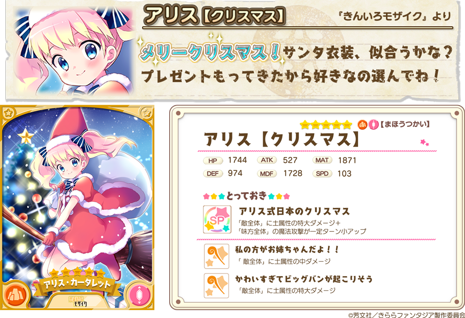

『きららファンタジア』をご利用いただき、誠にありがとうございます。
12/18より、新イベント「エトワリアのサンタクロース」で活躍するキャラクターが登場する「期間限定召喚」を開催いたします。
クリスマス衣装の「きんいろモザイク」アリス、「うらら迷路帖」千矢、「Aチャンネル」るんが期間限定で登場します。
2017年12月18日 17:00 ～ 2017年12月27日 13:59
※期間限定キャラクターは、この期間中のみ召喚から出現いたします。
・10回召喚では★4以上のキャラクターが1枚以上確定します。
・初回のみ星彩石300個で10連召喚が可能です。
2017年12月18日 17:00 ～ 2017年12月22日 13:59
ピックアップ期間中は、下記ピックアップ対象キャラクターの登場確率がアップします。
※ピックアップ期間終了後も、期間限定召喚の開催期間中は、下記キャラクターが召喚から登場します。

※表示されているキャラクターイラストは進化前のものです。
※表示されているステータスは、表示キャラクターの最大Lv（限界突破4回）時のものです。
※アリス【クリスマス】・千矢【クリスマス】・るん【クリスマス】は期間限定召喚開催期間終了後は登場しません。
さらに「キルミーベイベー」よりソーニャがイベント「エトワリアのサンタクロース」にてクリスマス衣装で登場することを記念して、★４ソーニャ（せんし）が召喚に追加されています。
※★4ソーニャ（せんし）は期間限定ピックアップ召喚のピックアップ対象外です。
※★4ソーニャ（せんし）は期間限定ピックアップ召喚終了後も召喚から登場します。
・提供割合の詳細はゲーム内の召喚画面＞提供割合からご覧ください。
・ピックアップ対象のキャラクターは同一レアリティの他のキャラクターよりも提供割合が高く設定されています。
・期間限定ピックアップ召喚終了後、今回登場した期間限定キャラクターが今後の更新において再登場する可能性がございます。
・期間限定ピックアップ召喚開催中は★4確定召喚からも期間限定キャラクターが登場いたします。 （提供割合は同一レアリティの他のキャラクターと同じです）
・キャンペーン内容は予告なく変更になる場合がございます。ご了承ください。
今後とも『きららファンタジア』をよろしくお願いいたします。